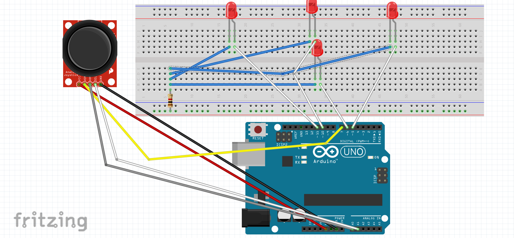

controlling leds

Just testing the joystick to find values when it up or down or left or right. I want to control four led depending on which side I was on it would turn on.
Components
- Arduino uno/Arduino mega/Arduino due
- ps2_joystick
- 1k ohm resistor
- 4 leds
- Breadboard
- Jumperwires
- Usb cable
Schematics
Description
The joystick can controll many compants like severos and led ect. The joystick can ack as a momentery push button when you click it.The joystick is found in gaming consoles like the ps5 and nindendo.
Code for find and y axis of the joystick by the movement
int xPin = A0;
int yPin = A1;
int buttonPin = 7;
void setup() {
pinMode(buttonPin, INPUT_PULLUP);
Serial.begin(9600);
}
void loop() {
int xVal = analogRead(xPin);
int yVal = analogRead(yPin);
int buttonVal = digitalRead(buttonPin);
Serial.print("X = ");
Serial.print(xVal);
Serial.print(" Y = ");
Serial.print(yVal);
Serial.print(" Button = ");
Serial.println(buttonVal);
delay(100);
}
Schematics

Description
The joystick can controll many compants like severos and led ect. The joystick can ack as a momentery push button when you click it.The joystick is found in gaming consoles like the ps5 and nindendo.
Code for controlling four led by the movement
int xPin = A0;
int yPin = A1;
int buttonPin = 7;
int upLED = 10;
int downLED = 6;
int leftLED = 11;
int rightLED = 5;
void setup() {
pinMode(upLED, OUTPUT);
pinMode(downLED, OUTPUT);
pinMode(leftLED, OUTPUT);
pinMode(rightLED, OUTPUT);
pinMode(buttonPin, INPUT_PULLUP);
}
void loop() {
int xVal = analogRead(xPin);
int yVal = analogRead(yPin);
boolean button = digitalRead(buttonPin);
int upPWM = map(yVal, 511, 0, 0, 255);
int downPWM = map(yVal, 511, 1023, 0, 255);
int leftPWM = map(xVal, 495, 0, 0, 255);
int rightPWM = map(xVal, 495, 1023, 0, 255);
if (yVal <= 511) {
analogWrite(upLED, upPWM);
}
if (yVal >= 511) {
analogWrite(downLED, downPWM);
}
if (xVal <= 495) {
analogWrite(leftLED, leftPWM);
}
if (xVal >= 495) {
analogWrite(rightLED, rightPWM);
}
if (button == LOW) {
digitalWrite(upLED, HIGH);
digitalWrite(downLED, HIGH);
digitalWrite(leftLED, HIGH);
digitalWrite(rightLED, HIGH);
}
}
Conclusion